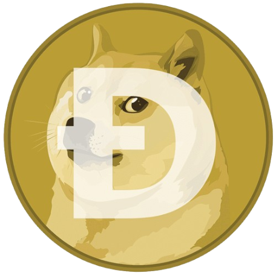
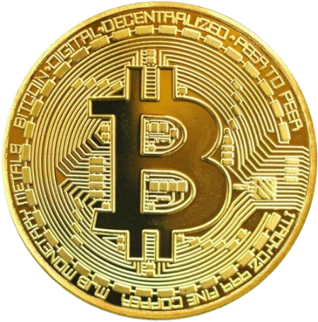

| Cryptocurrency | Description | Value |
|---|---|---|
| Dogecoin  |
Dogecoin (DOGE) is a peer-to-peer, open-source cryptocurrency. It is considered an altcoin and was launched in December 2013 with the image of a Shiba Inu dog named Kabosu as its logo. Dogecoin's blockchain has merit with its underlying technology derived from Litecoin. Notable features of Dogecoin—which uses the Scrypt algorithm are its low price and unlimited supply. Originally created as somewhat of a joke about cryptocurrency, the token became fairly popular with cryptocurrency fans. The community and developer humor included in the project adds to its appeal and is probably what has made it last longer than many other cryptocurrencies. | 1 Dogecoin is worth ₱9.48 |
| Bitcoin  |
Bitcoin, launched in 2009, was the first of a new kind of asset called cryptocurrency, a decentralized form of digital cash that eliminates the need for traditional intermediaries like banks and governments. Bitcoin can be used as a currency or an investment.Bitcoin is a form of digital currency that aims to eliminate the need for central authorities such as banks or governments. Instead, Bitcoin uses blockchain technology to support peer-to-peer transactions between users on a decentralized network. Transactions are authenticated through Bitcoin’s proof-of-work consensus mechanism, which rewards cryptocurrency miners for validating transactions. | 1 Bitcoin is worth ₱3,974,322.18 |
Ethereum  |
Ether is a cryptocurrency used in Ethereum's global virtual machine. It has several uses: It is used to pay network participants for their contributions to the blockchain. Investors use it as a store of value, and traders use it to take advantage of price movements. Consumers can use it to pay for goods and services at businesses that accept it.The Ethereum blockchain is a distributed ledger designed as a platform that makes it easier for people to create decentralized applications. Additionally, it was created to remove third parties from global financial systems and transfer monetary control to the people instead of governments and businesses. | 1 Dogecoin is worth ₱140,924.48 |